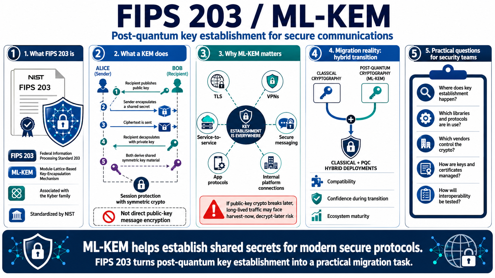

FIPS 203 and ML-KEM
Connecting to LMS... Progress: in progress

Narration
FIPS 203 is the Module-Lattice-Based Key-Encapsulation Mechanism Standard. The standardized algorithm name is ML-KEM, which is associated with the Kyber family from the NIST selection process. In practical terms, ML-KEM is used for key establishment: two parties use public-key operations to agree on shared secret material that can then protect communications with symmetric cryptography.
A key encapsulation mechanism, or KEM, is different from the older mental model of encrypting a message directly with a public key. In a KEM, one party encapsulates a shared secret using the recipient's public key and sends a ciphertext. The recipient decapsulates it using the private key. Both sides then derive shared key material for protecting the session or protocol exchange.
ML-KEM is central because many networked systems depend on key establishment. TLS, VPNs, service-to-service communication, application protocols, secure messaging, and internal platform connections all need a way to establish session keys. If the public-key mechanism is vulnerable to future quantum attack, long-lived sensitive traffic may be exposed to harvest-now, decrypt-later risk depending on the data and threat model.
Migration will often involve hybrid deployments where classical and post-quantum mechanisms are combined during transition. That helps manage compatibility and confidence while ecosystems mature. For security teams, the important questions are where key establishment happens, which libraries and protocols are in use, which vendors control the cryptography, how certificates or keys are managed, and how interoperability will be tested.